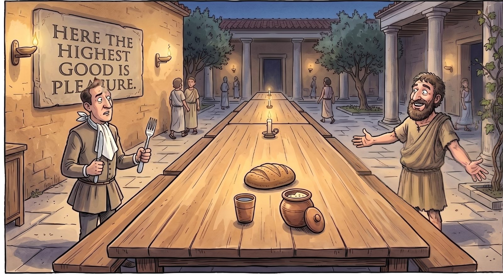

Fourth piece · 27 August 2026
The Man Whose Name Was Stolen
First we met the Stoics, then we chased a plate of pasta. Between those two, a man was waiting his turn, and frankly we kept him waiting too long. Everyone knows his name — and almost everyone knows it wrong. Today the adjective made from his name means the exact opposite of what he argued for all his life.
What follows is the edited transcript of the session where we paid that debt. The questions, the objections, and a memory that ambushed me out of nowhere are mine; across from me, once again, my patient research partner — an AI.
In the first piece I told the story of how I got into all this, in the second we met the Stoics, in the third we talked about that famous plate resisting fast food. All this time Epicurus has been waiting on us. Let's not be rude to our friend; let's hear a little of what he actually said.
Then let's start by building the world he was born into, or everything he says will float free.
Epicurus is born in 341 BC. By the time he arrives in Athens at eighteen for military service, Alexander has just died, his empire is being carved up among his generals, and the famous Athens is finished: democracy abolished, a Macedonian garrison in the city, the decisions now being made somewhere else.
Here's why that matters. Until then, a Greek's definition of the good life hung on a single frame: be a good citizen. Go to the assembly, fight for your city, have your name remembered. The meaning of your life was public. Now that frame had been taken away. There was still an assembly, but it had no power. And you were a man in the crowd who could affect nothing.
An entire generation of philosophy — the Stoics and Epicurus alike — is the child of that one question: if the big frame has collapsed and I have no effect on anything out there, where do I build a good life from?
Epicurus's answer starts from a very simple observation: watch yourself closely, and you'll see you aren't chasing pleasure — you're chasing relief. Say you're hungry. You don't want a feast; you want the hunger to stop. A slice of bread stops it. Everything you pile on top of the bread is no longer the thing that ends hunger; it's a new appetite you invented afterwards.
Which leads to this: a good life isn't built by piling things on, it's built by silencing, one at a time, the things gnawing at you. Like health — health isn't something you feel, it's the absence of illness. My favourite example: the best moment of your life isn't the cake. It's the moment the toothache stops. Cake adds something; the pain stopping subtracts something. And what we call happiness is largely that act of subtraction.
Honestly, that got to me. He's describing a minimal life. I think what drives us into a fast, stressful life is our appetites that never know when to stop — the urge to add a second and a third on top of the first. So if you want to slow your heart rate down, you have to learn to make do with little. Isn't that it?
Largely, yes — but I'm going to correct you here, because this exact distinction is the key to understanding him.
"Making do with little" is not what he said. Epicurus was no ascetic. If luxury turns up, enjoy it, he says; just don't build the load-bearing column of your life on it. He recommends simplicity not as a virtue but as insurance: get used to little, and good things taste better when they come and don't wreck you when they go. So it isn't about renouncing — it's about not being dependent. The gap looks small and is the size of a whole life.
He has a simple test for it, too. Take any desire and ask two questions: does it hurt if I don't have this? and does this have a stopping point?
Food: it hurts, and yes it does — one plate is enough. Fancy food: it doesn't hurt, but no harm if it comes. Fame, wealth, status, being taken seriously: it doesn't hurt — and here's the real point, there is no stopping point. Nobody ever wakes up and says "right, I'm known enough now." Epicurus says nearly all of your restlessness comes out of that third bucket; not because it's evil, but because it's bottomless. He says this in 300 BC, with not a single notification sound anywhere in the world.
And out of that bucket comes a line that lands hard today: lathe biosas — live unnoticed. Don't chase visibility. In the age of the personal brand it's hard to find a more heretical piece of advice.
So how did the man actually live? Where was his school, what did they eat and drink?
His school wasn't a lecture hall. Around 306 BC he bought a garden outside the walls of Athens, and the name stuck — the Garden. A group of friends lived there together, grew their own vegetables, ate simply and talked. He let women and slaves in; that was the scandal of the age, and it's largely where the dirtying of his name began.
Seneca reports that there was an inscription at the gate: the stranger is told he will do well here, and that here the highest good is pleasure. The guest who walks in hoping for a feast is met at the door with a barley roll and a cup of water. The man is making the joke at his own expense. In one letter he asks a friend to send him a pot of cheese — so that he can have a feast whenever he likes, he says. That's the feast.
And to me the most important part: he says that of everything wisdom provides for a happy life, by far the greatest is friendship. Not as sentiment, but as a security calculation — you can't control fortune, but you can weave a small circle around yourself where you're safe. And he doesn't only say it: in his will he freed his slaves and provided for the children of a dead friend. Dying of a kidney stone, after days of terrible pain, he writes a letter saying that what he set against the pain was the memory of past conversations.
So he doesn't build the theory and then step aside. He dies on top of it.

At some point you said he was in conflict with the Stoics. What was that story?
Set the scene first. Epicurus buys the Garden around 306 BC. Around 301 BC, Zeno of Citium starts teaching in the Stoa Poikile — the "Painted Porch" — a covered colonnade in the Athenian agora. That's where the school's name comes from; a stoa is a porch. Same city, same decade, walking distance apart. Two different answers to the same question inside the same wreckage.
The quarrel is in four places. One: what is the good? Epicurus says pleasure; the Stoics say virtue alone, find making pleasure the aim of life degrading, and never drop the "herd" insinuation about Epicureans — the insult was settled enough that centuries later Horace, mocking himself, would write that he was a pig from Epicurus's herd.
Two: does the universe have a plan? Here's the real chasm. For the Stoics the cosmos is rational, everything happens as it must, and your job is to lean your own will against that order. For Epicurus there are atoms and void; there are gods, but they take no interest in you. The result is surprising: the consolation runs in exactly opposite directions. The Stoic is soothed by "everything is where it should be." The Epicurean is soothed by "nobody is watching you, you owe nobody anything."
Three: do we step into the arena? The Stoics do — duty, responsibility, politics; Marcus Aurelius is an emperor, Seneca a minister. Epicurus says live unnoticed and stays out of politics, because that machine is built precisely to manufacture the bottomless desires that ruin a person. Four: death. The Stoic wants you to think about death every day; the rehearsal sharpens life. Epicurus says the opposite: death is nothing to you, stop thinking about it. Two opposite prescriptions for the same fear.
And a lovely detail that shows how real the rivalry was: Seneca is a committed Stoic, yet he quotes Epicurus constantly in his letters and has to defend himself for it — he says he crosses into the enemy camp not as a deserter but as a scout. When you need an excuse to quote your rival, the quarrel is serious.
Where do the Stoics come from, then? And there was that famous man who lived in a barrel — where does he stand in this picture?
Good question, because that man is standing right in the middle of the picture. Zeno of Citium was a Phoenician merchant. His ship goes down, he loses everything, he takes shelter in a bookshop in Athens. There he reads about Socrates and asks the bookseller, "Where can I find a man like this?" The bookseller points at someone passing in the street at that exact moment: Crates. Crates is the student of Diogenes of Sinope. Zeno becomes the student of Crates, and a few years later founds the Stoa.
So the line runs: Diogenes → Crates → Zeno → the Stoics. The man who lived in a barrel, who saw a child drinking water from cupped hands and threw away his own cup saying the child had beaten him in simplicity, is the grandfather of Stoicism. And Epicurus explicitly refuses that line; Epicurean sources say the wise man will not turn Cynic.
Which leaves us a spectrum: Diogenes gives everything up, Epicurus measures. One finds even a cup excessive; the other buys a garden, gathers his friends, and eats the cheese when it arrives. Both say "little," and they are two completely different littles.
So how did this man's name end up on a restaurant sign? We turned a man who ate barley bread into a gourmet.
The mechanism is this: Stoicism won the reputation war, Epicureanism lost it.
Stoicism got along comfortably with Christianity — there's a plan, there's mastery over the self, there's duty. Epicurus was a problem from top to bottom: the gods don't intervene, the soul dissolves at death, there's no afterlife, and the aim is called "pleasure." The man was declared heresy itself. In the Divine Comedy, in the sixth circle of hell, inside flaming tombs, guess who Dante puts among the heretics: Epicurus and the followers who hold that the soul dies with the body.
So the slander was theological first. Then it softened over the centuries: from religious heresy to moral looseness, and from there down to fondness for the table. That's the man's journey — first an infidel, then a libertine, finally a gourmet. Today his name is on a menu cover.
Even the word itself shares the fate: in Latin bonum means "good," but its plural bona means "property, possessions" — just like good and goods in English. So the very word in "the highest good" quietly became the name for the boxes in the warehouse as well.
And here's the bitterly funny part: for two thousand years people have known this man by his label. Everyone assumed they knew what he was without reading a line.

I need to put a memory in here, because it came back to me while you were talking.
About ten years ago I met an old man in a place I had no wish to be. I'd gone out of obligation; from the moment I walked in I was watching the clock. And I had judged the man before he even opened his mouth — by his clothes, by the air around him, by the way people behaved towards him. I remember thinking, "what am I doing here."
After the crowd dispersed the two of us were left alone. I started talking to him, I'll admit, partly to look down my nose at him. A while later we were still talking. Over the years that followed we became good friends.
He had a single set of clothes. He wore it summer and winter and was perfectly happy about it. He used to say that everything you own puts a weight on you. One day he said: "If I had two sets of clothes, I'd need a wardrobe to keep the spare one in. Right now I have one, and it will carry me to my death."
And he did go in those clothes. I have never in my life met anyone freer, anyone more at ease.
That sentence is the best sentence of this session, and let me tell you why: without knowing it, the man built Epicurus's "bottomless bucket" argument better than Epicurus did. Because he isn't merely saying more is too much. He's saying that every object gives birth to its own container. The second set of clothes breeds a wardrobe, the wardrobe a room, the room a house, and the house the job that pays for the house. The chain starts with a single shirt.
But I owe you an objection. That man's freedom had a price, and it's a price neither you will pay nor I would recommend: nobody depended on him. You can die in a single set of clothes if there's no child who'll be cold in them. You have a family, a business, people leaning on you.
And that's exactly why Epicurus is more useful to us than he is. Look what Epicurus did: he didn't go into the desert, he bought a garden. He held property, lived with his friends, ate the cheese when it came, owned enough to write a will. He designed a sustainable simplicity with people inside it, one that doesn't abandon anyone. In short: your friend is an inspiration, Epicurus is a method. Let's not confuse the two.
And let's avoid one more trap, or this whole piece will smell like an aesthetic preference held by people whose lives are going well: most speed isn't chosen, it's imposed. The person with rent, with debt, who falls behind the moment they slow down, isn't running out of appetite; they're running because they have to. Epicurus was in a position to buy the garden, and your friend had nobody — both are a kind of privilege. So let's draw the line clearly: appetite is the thing we can work on, speed is largely an economic matter. This piece deals with the first and makes no claim to have solved the second.
One last thing: what's actually left of this man today? Most of what he wrote is lost, isn't it?
True — he's said to have written some three hundred books and nearly all of them are gone. What we hold is a few letters, a collection of sayings, and what others passed on. But this is where the story goes somewhere unexpected.
When Vesuvius erupted in AD 79, the library of a villa in Herculaneum was carbonised. That library belonged to an Epicurean school. Hundreds of papyrus scrolls sat for two thousand years without being opened; everyone who tried crumbled what they held.
And two months ago, on 25 June 2026, one of those scrolls was read from beginning to end without ever being opened. High-resolution X-ray scans and AI peeled it apart layer by layer; the text that came out was the eighth book of the Epicurean Philodemus's On Gods — a volume nobody even knew existed.
Now picture this. You're sitting here asking me about Epicurus and I'm answering you. At the same moment, somewhere else, another AI is reading the ashes of his school. The man's name was stolen, twisted and hung on a sign for two thousand years. Now his own sentences are coming back, word by word, out of the ash.
So what did I take from this session?
First, this: we aren't choosing here. The cup Diogenes threw away, Epicurus's garden, the single set of clothes belonging to the man I knew — these aren't a menu of options, they're a spectrum. I'm not going to live like that man, and I'm not going to live like Epicurus. I'm trying to collide the ideas and come out with a synthesis of my own, that's all.
Second, that wardrobe sentence has stayed with me for ten years and today I understood why. The man hadn't given me a moral lesson; he'd described a mechanism. That everything breeds its own container. I laughed it off at the time; now I look around my house and count how many containers I see.
Third, and this is the one that shames me: all the way through this piece I've been laughing at people for knowing Epicurus by his label. And I'd made exactly the same mistake — not in a history book, but ten years ago, in a room, before the man had even opened his mouth. Judging by the label turns out to be a two-thousand-year-old habit, and I was standing in that crowd too.
And the strangest one: Epicurus's name was stolen two thousand years ago, and this very year the books of his own school have started being read back out of the ashes. He wasn't in a hurry, apparently. Let that be a consolation to us too: some things aren't understood in their own time, but it seems they don't get lost either.
The previous stop: First Stop: The Stoics. If you're curious where this journal came from: what we mean by slow living. No hurry anyway.